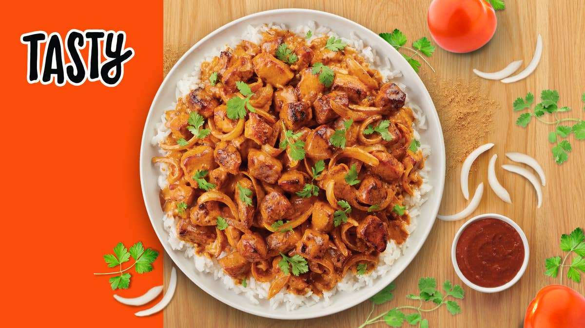

Chicken Tikki Masala

Description
Southern Asian community in Great Britain's take on
traditional northern Indian butter chicken.
Ingredients
CHICKEN MARINADE
- 3 boneless, skinless chicken breasts
- 1/2 cup plain yogurt
- 2 Tablespoons lemon juice
- 6 cloves garlic, minced
- 1 tablespoon minced ginger
- 2 teaspoons salt
- 2 teaspoons ground cumin
- 2 teaspoons garam masala
- 2 teaspoons paprika
SAUCE
- 3 tablespoons oil
- 1 large onion, finely chopped
- 8 cloves garlic, minced
- 2 teaspoons ground cumin
- 2 teaspoons ground tumeric
- 2 teaspoons ground coriander
- 2 teaspoons paprika
- 2 teaspoons chilli powder
- 2 teaspoons garam masala
- 1 tablespoon tomato puree
- 3 1/2 cups tomato sauce
- 1 1/4 cups water
- 1 cup heavy cream
- 1/4 cup fresh cilantro, for garnish
- cooked rice, for serving
- naan bread, for serving
Directions
- Slice the chicken into bite-sized chunks. Combine
the cubed chicken with the yogurt, lemon juice,
garlic, ginger,salt, cumin, garam masala, and
paprika and stir until well-coated.
- Cover and refrigerate at least 1 hour, or overnight
- Preheat oven to 500F(260C). Line a high-sided baking pan
or roasting tray with parchment paper.
- Place the marinated chicken pieces on bamboo or wooden
skewers, then set them over the prepared baking pan,
making sure there is space underneath the chicken to help
distribute the heat more evenly. Bake for about 15 minutes,
until slightly dark brown on the edges.
- Make the sauce: Heat the oil in a large pot over
medium heat, then saute the onions, ginger and garlic
until tender but not browned. Add the cumin, tumeric,
coriander, paprika, chili powder, and garam masala; stir
constantly for about 30 second, until the spices are
fragrant. Stir in the tomato puree, tomato sauce, and 1 1/4 cups
of water, then bring to a boil and cook for about 5 minutes.
Pour in the cream.
- Remove the chicken from the skewers and add to the sauce
, cooking for another 1-2 minutes. Garnish with cilantro and
serve over rice or alongside naan bread. Enjoy!